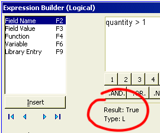

Update Example
Updates are the most common and easiest operations that users will perform. Here is an example that uses the AlphaSports sample database.
Open the AlphaSports database.
Display the Operations tab of the Control Panel.
Click New to display the Create New Operation dialog.
Select "Update records" from the left-hand list.
Select "Invoice_Items" from the right-hand list.
Enter the following data into the fields that appear.
|
Field |
Expression |
Condition |
| Quantity | Quantity * 2 | Quantity > 1 |
Click
 in the Field column to display
a list of fields in the table. Select "Quantity". If you knew
the name of the field, you could simply type in this value.
in the Field column to display
a list of fields in the table. Select "Quantity". If you knew
the name of the field, you could simply type in this value.Click
 in the Expression column to display
the Expression Builder. Note how the Expression
Builder shows you the value of quantity in the first record after
being multiplied by 2. It also confirms that the result will be N (numeric).
If this was a character field, the result would have to be C (character).
in the Expression column to display
the Expression Builder. Note how the Expression
Builder shows you the value of quantity in the first record after
being multiplied by 2. It also confirms that the result will be N (numeric).
If this was a character field, the result would have to be C (character).

Click
in the Condition column to display
the Expression Builder. Note how the Expression
Builder shows you the value of quantity in the first record after
being compared to the value 1. It also confirms that the result will be
L (logical). The value in this field must always evaluate to .T. (records
to process) or .F. (records to ignore).

Click
 Run on the toolbar. All quantity
values greater than 1 will be doubled.
Run on the toolbar. All quantity
values greater than 1 will be doubled.
 Note : This example
updates an existing field. If you have imported data into a table and
need to use an update operation to reformat it, it is desirable to create
a new field that will receive the new value. This is required
when changing the type of the data.
Note : This example
updates an existing field. If you have imported data into a table and
need to use an update operation to reformat it, it is desirable to create
a new field that will receive the new value. This is required
when changing the type of the data.
For example, an import operation brought a time field into a table as a Numeric value. The update operation needs to change it to a Short Time value. The update operation could specify.
|
Field |
Expression |
Condition |
| New_Field | totime(Old_Field,1,0) | .t. |
The New_Field receives the new value. The expression totime(Old_Field,1,0) expression changes a numeric value to a short time value. The .t. indicates that all records are to be processed.